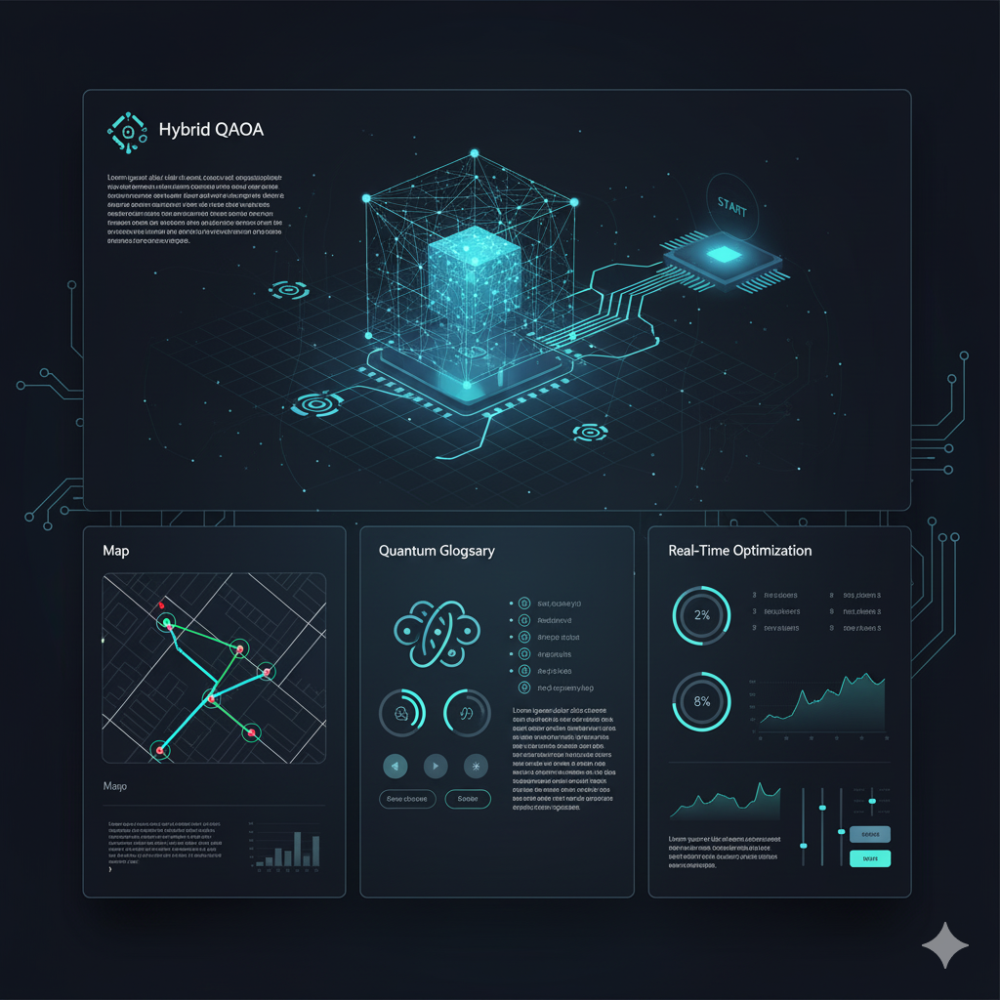
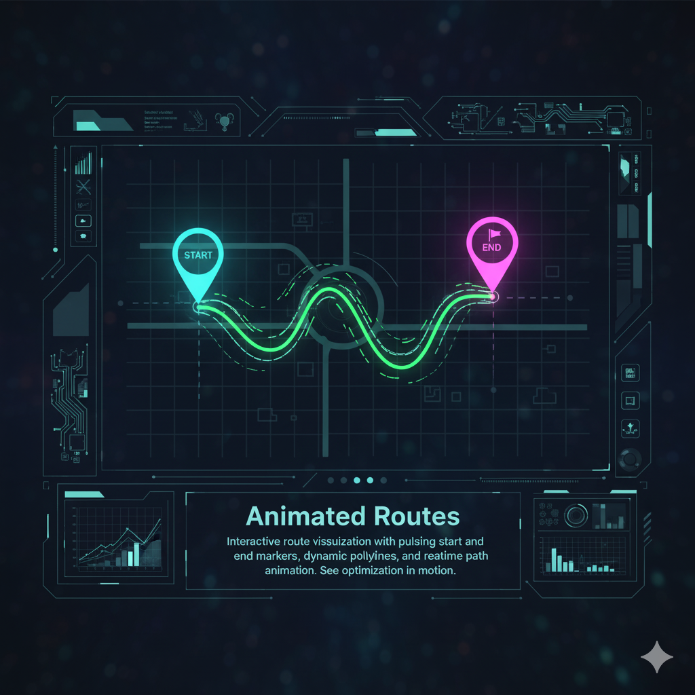
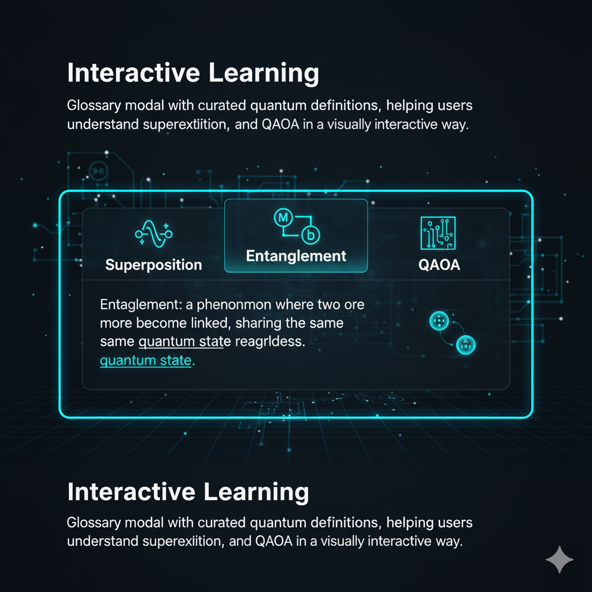
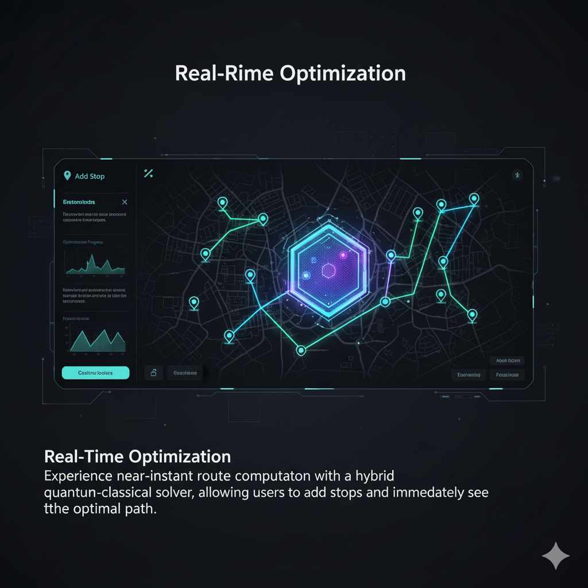
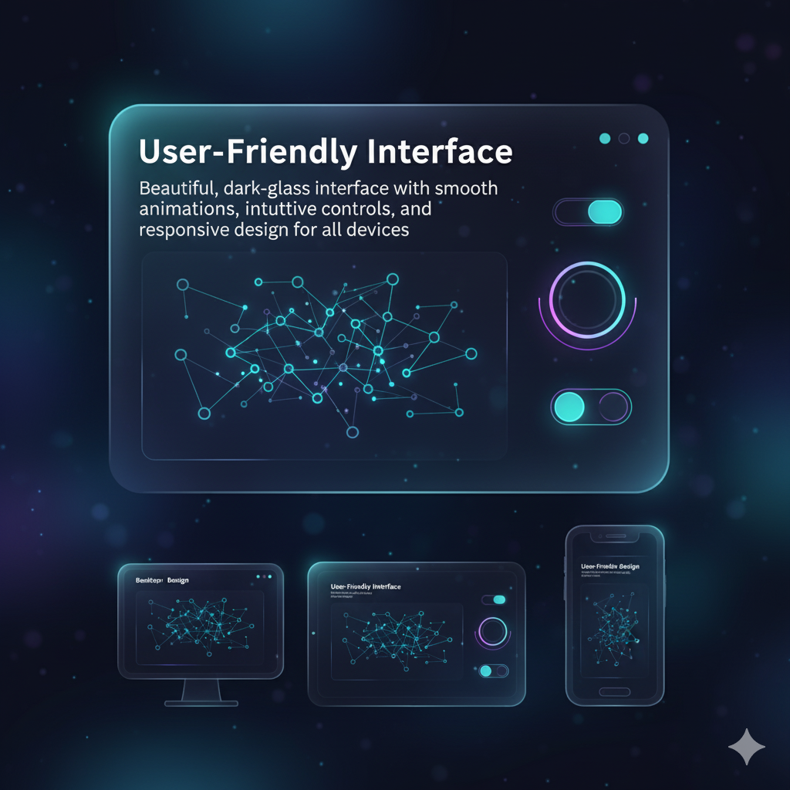

Hybrid QAOA
Combines classical optimizers with variational quantum circuits to explore complex combinatorial spaces efficiently. Ideal for near-term quantum hardware.

Animated Routes
Interactive route visualization with pulsing start and end markers, dynamic polylines, and real-time path animation. See optimization in motion.

Interactive Learning
Glossary modal with curated quantum definitions, helping users understand superposition, entanglement, and QAOA in a visually interactive way.

Real-Time Optimization
Experience near-instant route computation with a hybrid quantum-classical solver, allowing users to add stops and immediately see the optimal path.

User-Friendly Interface
Beautiful, dark-glass interface with smooth animations, intuitive controls, and responsive design for all devices, making it visually appealing.